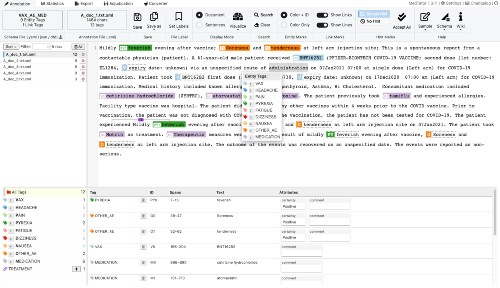
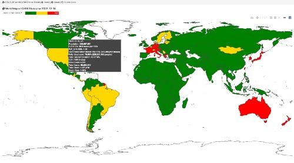

Huan He
hehuan2112@gmail.com
Department of Biomedical Informatics and Data Science, Yale University School of Medicine
100 College St, New Haven, CT 06510
NEWS
Feb. 2025: Congratulations to Dr. Xie for the acceptance of Me-LLaMA and especially the new position! Hope to see you again in future!
Jan. 2025: Congratulations to Dr. Riaz and Syed Arsalan Ahmed Naqvi for the paper acceptance of JAMIA!
Dec. 2024: Bold forward! Good bye 2024!
Nov. 2024: Happy to meet old friends at San Francisco, AMIA 2024! Congratulations to Taylor Harrison for her Best Student Paper Award at AMIA 2024! And congratulations to Bin Choi for the Best Poster Award at VAHC 2024!
Oct. 2024: Retreat at Skytop, PA!
Sep. 2024: New semester! Welcome new members to our lab!
Aug. 2024: Acadia National Park is a great place for summer vacation!
Jul. 2024: One year in New Haven, CT completed! Forward to the next chapter!
Jun. 2024: Congratulations to Dr. Lin for winning the Best Paper Award in industry track in IEEE ICHI 2024! Congratulations to Dr. Fu for the paper acceptance in JAMIA! I gave a presentation about visual analytics and applications in the Yale NLP/LLM interest group meeting!
May 2024: ASCO 2024 is a great conference! Thousands of posters and many interesting talks and exhibitions! Looking forward to the next year!
Apr. 2024: We presented our data visualization + LLM work at YSM Cushing/Whitney Medical Library!
Mar. 2024: Happy to meet friends at Boston in AMIA Informatics Summit 2024! And congratulations to Dr. Raja's presentation A Study of Biomedical Relation Extraction Using GPT Models!
Jan. 2024: 2024! New start! New aims!
Dec. 2023: Goodbye 2023, hello 2024! Happy New Year! Hope all the projects will be successful in 2024!
Nov. 2023: Thanks to Dr. Fu and Dr. Riaz for presenting our posters at AMIA 2023!
Oct. 2023: VAHC 2023 workshop at IEEE VIS 2023!
Sep. 2023: Explored the beautiful campus of Yale University! The Sterling Memorial Library is amazing! And the Yale University Art Gallery is also a must-see place!
Aug. 2023: There are many beautiful places in New Haven, CT! East Rock, Wesk Rock, and Farmington Canal Heritage Trail~
Jul. 2023: Two posters are accepted by AMIA Annual Symposium 2023! And congratulations to Taylor Hawkins and Kurt Miller for the acceptance of their student papers! Congratulations to Andrew Wen for the acceptance of the JAMIA and npj Digital Medicine!
Jun. 2023: Relocated to New Haven, CT for my new role as a Research Scientist in the Department of Biomedical Informatics and Data Science at Yale University School of Medicine!
May 2023: Congratulations to Dr. Moon for the acceptance of two JMIR papers!
Mar. 2023: AMIA IS 2023 @Seattle! Sleepless in Seattle (due to deadlines and two oral presentations :)! Nice city, people, and food!
Feb. 2023: Congratulations to Dr. Liu for the Established Investigator Award!
Jan. 2023: Happy new year! Updated the data structure and layout of my website with Pelican!
Dec. 2022: Congratulations to Dr. Riaz and Syed Arsalan Ahmed Naqvi for the paper acceptance of JAMA Oncology! And, my podium, system demo, and poster are accepted by AMIA IS 2023!
Nov. 2022: Enjoy AMIA 2022 and serve as paper co-chair for VAHC 2022 @Washington D.C.! And congratulations to Dr. Moon for her Distinguished Paper Award in AMIA 2022! And my poster and co-author paper are accepted by IEEE BIBM 2022!
Oct. 2022: Meet friends in IEEE VIS 2022 @Oklahoma City!
Aug. 2022: Our team 'COVID-19 Predictive Analytics Task Force' received Mayo Clinic Team Science Award.
Jul. 2022: Two posters are accepted in IEEE VIS 2022!
Jun. 2022: Our papers, podiums, and posters are accepted in AMIA 2022! And serve as the Web Chair for IEEE ICHI 2022.
Mar. 2022: AMIA IS 2022 @Chicago!
Dec. 2021: Submissions are accepted by AMIA IS 2022 and Bioinformatics!
Nov. 2021: Nice trip to San Diego for AMIA 2021! So many people!
Oct. 2021: IEEE VIS 2021 Virtual ... Hope to be hybrid or offline next year in Oklahoma!
Jul. 2021: Two posters are accepted in IEEE VIS 2021!
Jun. 2021: One oral presentation and two posters are accepted in AMIA 2021!
Mar. 2021: Still work from home ... submitted our works to VIS and AMIA! Keep coding!
Nov. 2020: Virtual AMIA 2020! So many events, wow...
Oct. 2020: Virtual VIS20 is also great! Got Best Poster Award of IEEE VIS 2020! Happy!
Aug. 2020: Two posters are accepted by IEEE VIS 2020! Congratulations to Yating on the acceptance of her FIRST TVCG track paper!
Jul. 2020: Two posters are accepted by AMIA 2020!
Mar. 2020: Start work from home ... work hard!
Oct. 2019: Meet people at VIS19 in Vancouver! 3 papers are accepted in IEEE BigData 2019! Congratulations to Rongzhe and Yingchao!
Aug. 2019: Mayo Clinic Orientation!
Jul. 2019: PhD defense passed! A paper is accepted in VAST'19!
Jun. 2019: PhD Dissertation submitted!
May 2019: An IJCAI demo has been accepted!
Apr. 2019: My first SCI paper has been accepted!
Feb. 2019: Two demos are accepted in WWW'19 demonstration track!
Dec. 2018: The paper of VUC is accepted in CompEd'19!
Oct. 2018: VIS18 is exciting! Impressive trip to Berlin.
Jul. 2018: VUSphere has been accepted in VAST 2018 Conference Track! So happy!
Mar. 2018: My FIRST first author international conference paper has been accepted by Edutainment'18! So excited!
I'm a Research Scientist working at the Department of Biomedical Informatics and Data Science of Yale University School of Medicine, working with Dr. Hua Xu. I was a research fellow in the Department of AI and Informatics of Mayo Clinic, working with Dr. Hongfang Liu. I received my Ph.D at the School of Electronic and Information Engineering, Xi'an Jiaotong University supervised by Dr. Qinghua Zheng. I obtained my master degree and bachelor degreen in software engineering from Xi'an Jiaotong University. My research interest mainly focuses on applying data visualization, visual analytics, and machine learning techniques in addressing real-world clinical challenges.
2025
Systemic Therapy in Patients With Metastatic Castration-Resistant Prostate Cancer: ASCO Guideline Update
Rohan Garje, Irbaz Bin Riaz, Syed Arsalan Ahmed Naqvi, Robert Bryan Rumble, Mary-Ellen Taplin, Terry M. Kungel, Daniel Herchenhorn, Tian Zhang, Kathryn E. Beckermann, Neha Vapiwala, Michael A. Carducci, Paul Celano, Sebastien J. Hotte, Arnab Basu, Hala Borno, Alan H. Bryce, Peng Wang, Elizabeth Wulff-Burchfield, Lisa Bodei, Andrew Loblaw, Robert J. Hamilton, Hamid Emamekhoo, Thomas A. Hope, Huan He, M. Hassan Murad, Hongfang Liu, James Elbert Williams, Rahul A. Parikh
Journal of Clinical Oncology,
May 2, 2025
40315400
10.1200/JCO-25-00007
Cite
Social determinants of health extraction from clinical notes across institutions using large language models
Vipina K. Keloth, Salih Selek, Qingyu Chen, Christopher Gilman, Sunyang Fu, Yifang Dang, Xinghan Chen, Xinyue Hu, Yujia Zhou, Huan He, Jungwei W. Fan, Karen Wang, Cynthia Brandt, Cui Tao, Hongfang Liu, Hua Xu
npj Digital Medicine,
May 17, 2025
40379919
PMC12084648
10.1038/s41746-025-01645-8
Cite
CDEMapper: enhancing National Institutes of Health common data element use with large language models
Yan Wang, Jimin Huang, Huan He, Vincent Zhang, Yujia Zhou, Xubing Hao, Pritham Ram, Lingfei Qian, Qianqian Xie, Ruey-Ling Weng, Fongci Lin, Yan Hu, Licong Cui, Xiaoqian Jiang, Hua Xu, Na Hong
Journal of the American Medical Informatics Association, ocaf064,
May 7, 2025
40332956
10.1093/jamia/ocaf064
Cite
Benchmarking large language models for biomedical natural language processing applications and recommendations
Qingyu Chen, Yan Hu, Xueqing Peng, Qianqian Xie, Qiao Jin, Aidan Gilson, Maxwell B Singer, Xuguang Ai, Po-Ting Lai, Zhizheng Wang, Vipina K. Keloth, Kalpana Raja, Jimin Huang, Huan He, Fongci Lin, Jingcheng Du, Rui Zhang, W Jim Zheng, Ron A Adelman, Zhiyong Lu, Hua Xu
Nature Communication,
Apr 6, 2025
40188094
PMC11972378
10.1038/s41467-025-56989-2
Cite
Medical foundation large language models for comprehensive text analysis and beyond
Qianqian Xie, Qingyu Chen, Aokun Chen, Cheng Peng, Yan Hu, Fongci Lin, Xueqing Peng, Jimin Huang, Jeffrey Zhang, Vipina K. Keloth, Xinyu Zhou, Lingfei Qian, Huan He, Dennis Shung, Lucila Ohno-Machado, Yonghui Wu, Hua Xu, Jiang Bian
npj Digital Medicine,
March 5, 2025
40044845
PMC11882967
10.1038/s41746-025-01533-1
Cite
Collaborative large language models for automated data extraction in living systematic reviews
Muhammad Ali Khan, Umair Ayub, Syed Arsalan Ahmed Naqvi, Kaneez Zahra Rubab Khakwani, Zaryab Bin Riaz Sipra, Ammad Raina, Sihan Zhou, Huan He, Amir Saeidi, Bashar Hasan, Robert Bryan Rumble, Danielle S. Bitterman, Jeremy L Warner, Jia Zhou, Amye J Tevaarwerk, Konstantinos Leventakos, Kenneth L Kehl, Jeanne M. Palmer, M. Hassan Murad, Chitta Baral, Irbaz Bin Riaz
Journal of the American Medical Informatics Association, ocae325,
Jan 21, 2025
39836495
10.1093/jamia/ocae325
Cite
2024
A New Approach to Detecting Semantic Novelty of Biomedical Literature
Xueqing Peng, Yutong Xie, Huan He, Yan Hu, Kalpana Raja, Fongci Lin, Qijia Liu, Jeffrey Zhang, Qingyu Chen, Qiaozhu Mei, Hua Xu
AMIA 2024 Annual Symposium,
San Francisco, CA,
Nov 11, 2024
Podium Abstract
Cite
CDEMapper: Enhancing NIH Common Data Element Normalization using Large Language Models
Jimin Huang, Yan Wang, Huan He, Fongci Lin, Yan Hu, Qianqian Xie, Pritham Ram, Xiaoqian Jiang, Hua Xu, Na Hong
AMIA 2024 Annual Symposium,
San Francisco, CA,
Nov 11, 2024
Podium Abstract
Cite
DataMed 2.0: A Discovery Index for Finding Biomedical Datasets
Kalpana Raja, Huan He, Ryan Denlinger, Maxwell Wibert, Xueqing Peng, Jeffrey Zhang, Christopher Gilman, Kijana Richmond, Lucila Ohno-Machado, Hua Xu
AMIA 2024 Annual Symposium,
San Francisco, CA,
Nov 11, 2024
Podium Abstract
Cite
Me LLaMA: Foundation Large Language Models for Medical Applications
Qianqian Xie, Qingyu Chen, Aokun Chen, Cheng Peng, Yan Hu, Fongci Lin, Xueqing Peng, Jimin Huang, Jeffrey Zhang, Vipina K. Keloth, Xinyu Zhou, Huan He, Lucila Ohno-Machado, Yonghui Wu, Hua Xu, Jiang Bian
AMIA 2024 Annual Symposium,
San Francisco, CA,
Nov 11, 2024
Podium Abstract
Cite
Leveraging Large Language Models for Data Extraction in Living Systematic Reviews and Meta-analyses
Muhammad Ali Khan, Umair Ayub, Syed Arsalan Ahmed Naqvi, Kaneez Zahra Rubab Khakwani, Zaryab Bin Riaz Sipra, Sihan Zhou, Huan He, Seyyed Amir Hossein, Bashar Hasan, Bryan Rumble, Danielle S. Bitterman, Jeremy L Warner, Jia Zhou, Chitta Baral, Jeanne M. Palmer, M. Hassan Murad, Irbaz Bin Riaz
AMIA 2024 Annual Symposium,
San Francisco, CA,
Nov 11, 2024
Podium Abstract
Cite
Topic Analysis of the Global Clinical Trials using Large Language Model
Zhiyuan Cao, Qinhan Hu, Dingwei Zhan, Siyan Guo, Huan He, Hua Xu
AMIA 2024 Annual Symposium,
San Francisco, CA,
Nov 11, 2024
Poster Abstract
Cite
Towards Enhanced Topic Discovery on Semantic Maps for Biomedical Literature Exploration
Bin Choi, Brian Ondov, Huan He, Hua Xu
The 15th Workshop on Visual Analytics in Healthcare (VAHC 2024) in conjunction with AMIA 2024 Annual Symposium,
San Francisco, CA,
Nov 9, 2024
Poster
Full-text
Cite
Visual Explanation of the Assessment of Certainty of Evidence for Systematic Review and Meta-analysis
Syed Arsalan Ahmed Naqvi, Kunwer Sufyan Faisal, Manal Imran, Muhammad Ali Khan, Kaneez Zahra Rubab Khakwani, M. Hassan Murad, Huan He, Irbaz Bin Riaz
The 15th Workshop on Visual Analytics in Healthcare (VAHC 2024) in conjunction with AMIA 2024 Annual Symposium,
San Francisco, CA,
Nov 9, 2024
Paper
IEEE Xplore
10.1109/VAHC65315.2024.00010
Cite
A Patient Decision Aid Tool to Support Shared Decision-Making
Syed Arsalan Ahmed Naqvi, M. Hassan Murad, Huan He, Irbaz Bin Riaz
The 15th Workshop on Visual Analytics in Healthcare (VAHC 2024) in conjunction with AMIA 2024 Annual Symposium,
San Francisco, CA,
Nov 9, 2024
Poster
Abstract
Cite
Visual Exploration of the Pairwise Meta-analysis of Toxicity of Immune Checkpoint Inhibitors
Syed Arsalan Ahmed Naqvi, Muhammad Ali Khan, M. Hassan Murad, Huan He, Irbaz Bin Riaz
The 15th Workshop on Visual Analytics in Healthcare (VAHC 2024) in conjunction with AMIA 2024 Annual Symposium,
San Francisco, CA,
Nov 9, 2024
Poster
Abstract
Cite

A Case Demonstration of the Open Health Natural Language Processing Toolkit From the National COVID-19 Cohort Collaborative and the Researching COVID to Enhance Recovery Programs for a Natural Language Processing System for COVID-19 or Postacute Sequelae of SARS CoV-2 Infection: Algorithm Development and Validation
Andrew Wen, Liwei Wang, Huan He, Sunyang Fu, Sijia Liu, David A Hanauer, Daniel R Harris, Ramakanth Kavuluru, Rui Zhang, Karthik Natarajan, Nishanth P Pavinkurve, Janos Hajagos, Sritha Rajupet, Veena Lingam, Mary Saltz, Corey Elowsky, Richard A Moffitt, Farrukh M Koraishy, Matvey B Palchuk, Jordan Donovan, Lora Lingrey, Garo Stone-DerHagopian, Robert T Miller, Andrew E Williams, Peter J Leese, Paul I Kovach, Emily R Pfaff, Mikhail Zemmel, Robert D Pates, Nick Guthe, Melissa A. Haendel, Christopher G. Chute, Hongfang Liu, National COVID Cohort Collaborative, RECOVER Initiative
JMIR medical informatics, Volume 12, e49997,
September 14, 2024
39250782
PMC11420592
10.2196/49997
Cite
A taxonomy for advancing systematic error analysis in multi-site electronic health record-based clinical concept extraction
Sunyang Fu, Liwei Wang, Huan He, Andrew Wen, Nansu Zong, Anamika Kumari, Feifan Liu, Sicheng Zhou, Rui Zhang, Chenyu Li, Yanshan Wang, Jennifer St Sauver, Hongfang Liu, Sunghwan Sohn
Journal of the American Medical Informatics Association, Volume 31, Issue 7,
May 14, 2024
38742455
10.1093/jamia/ocae101
Cite
Kamino: A Scalable Architecture to Support Medical AI Research Using Large Real World Data
Fongci Lin, Patrick Yang, Huan He, Jimin Huang, Roger Gagne, Daniel Rice, Nathan Price, Will Byron, Yan Hu, Donn Felker, Will Button, Deniella Meeker, Allen Hsiao, Hua Xu, Charles Jr Torre, Wade Schulz
IEEE 12th International Conference on Healthcare Informatics (ICHI 2024) Best Paper Award in industry track,
Orlando, FL,
Jun 4, 2024
Abstract
IEEE Xplore
10.1109/ICHI61247.2024.00072
Cite
2023
A Living Interactive Evidence Synthesis Framework and Applications for Creating and Maintaining Living Systematic Reviews and Meta-Analysis
Huan He, Irbaz Bin Riaz, Syed Arsalan Ahmed Naqvi, Rabbia Siddiqi, Noureen Asghar, Mahnoor Islam, M. Hassan Murad, Hongfang Liu
AMIA 2023 Annual Symposium,
New Orleans, LA,
Nov 11, 2023
Abstract
Poster
Cite
Visual Exploration of the Results and Errors of Information Extraction
Huan He, Sunyang Fu, Andrew Wen, Liwei Wang, Sungrim Moon, Kurt Miller, Hongfang Liu
AMIA 2023 Annual Symposium,
New Orleans, LA,
Nov 11, 2023
Abstract
Poster
Cite
An open natural language processing (NLP) framework for EHR-based clinical research: a case demonstration using the National COVID Cohort Collaborative (N3C)
Sijia Liu, Andrew Wen, Liwei Wang, Huan He, Sunyang Fu, Robert T Miller, Andrew Williams, Daniel R Harris, Ramakanth Kavuluru, Mei Liu, Noor Abu-el-Rub, Dalton Schutte, Rui Zhang, Masoud Rouhizadeh, John D Osborne, Yongqun He, Umit Topaloglu, Stephanie S Hong, Joel H Saltz, Thomas Schaffter, Emily R Pfaff, Christopher G. Chute, Tim Duong, Melissa A. Haendel, Rafael Fuentes, Peter Szolovits, Hua Xu, Hongfang Liu
Journal of the American Medical Informatics Association,
August 14, 2023
37555837
10.1093/jamia/ocad134
Cite
The IMPACT framework and implementation for accessible in silico clinical phenotyping in the digital era
Andrew Wen, Huan He, Sunyang Fu, Sijia Liu, Kurt Miller, Liwei Wang, Kirk E. Roberts, Steven D. Bedrick, William R. Hersh, Hongfang Liu
npj Digital Medicine,
July 21, 2023
37479735
PMC10362064
10.1038/s41746-023-00878-9
Cite
Extractive Clinical Question-Answering With Multianswer and Multifocus Questions: Data Set Development and Evaluation Study
Sungrim Moon, Huan He, Heling Jia, Hongfang Liu, Jungwei W. Fan
JMIR AI,
June 20, 2023
10.2196/41818
Cite
First-line Systemic Treatment Options for Metastatic Castration-Sensitive Prostate Cancer: A Living Systematic Review and Network Meta-analysis
Irbaz Bin Riaz, Syed Arsalan Ahmed Naqvi, Huan He, Noureen Asghar, Rabbia Siddiqi, Hongfang Liu, Parminder Singh, Daniel S. Childs, Praful Ravi, Syed A. Hussain, M. Hassan Murad, Stephen A. Boorjian, Christopher Sweeney, Eliezer M. Van Allen, Alan H. Bryce
JAMA Oncology,
March 2, 2023
36862387
PMC9982744
10.1001/jamaoncol.2022.7762
Cite
Acquisition of a Lexicon for Family History Information: Bidirectional Encoder Representations From TransformersAssisted Sublanguage Analysis
Liwei Wang, Huan He, Andrew Wen, Sungrim Moon, Sunyang Fu, Kevin J. Peterson, Xuguang Ai, Sijia Liu, Ramakanth Kavuluru, Hongfang Liu
npj Digital Medicine,
April 13, 2023
37368483
PMC10337517
10.2196/48072
Cite
Towards Real-time Visual Exploration of Network Meta-analysis Results
Huan He, Irbaz Bin Riaz, Syed Arsalan Ahmed Naqvi, Rabbia Siddiqi, Noureen Asghar, Mahnoor Islam, M. Hassan Murad, Hongfang Liu
AMIA 2023 Informatics Summit,
Seattle, WA,
March 13-17, 2023
Podium Abstract
Slide
Cite
Visualizing and Understanding the Errors of Information Extraction Results
Huan He, Sunyang Fu, Liwei Wang, Andrew Wen, Sijia Liu, Sungrim Moon, Kurt Miller, Hongfang Liu
AMIA 2023 Informatics Summit,
Seattle, WA,
March 13-17, 2023
Abstract
Slide
Cite
Towards High Efficiency Eligibility Assessment for Clinical Trial Accrual
Huan He, Andrew Wen, Sunyang Fu, Sijia Liu, Kurt Miller, Michael Lin, Robert Gehrke, Carmen Vodislav, Kathryn Cook, David Strauss, Dania Helgeson, Thomas Kingsley, Alexander J. Ryu, Hongfang Liu
AMIA 2023 Informatics Summit,
Seattle, WA,
March 13-17, 2023
Abstract
Poster
Cite
A Cohort Discovery and Exploration System for Clinical Trial Accrual
Andrew Wen, Huan He, Sunyang Fu, Sijia Liu, Kurt Miller, Robert Gehrke, Carmen Vodislav, Michael Lin, Kathryn Cook, David Strauss, Dania Helgeson, Thomas Kingsley, Alexander J. Ryu, Hongfang Liu
AMIA 2023 Informatics Summit,
Seattle, WA,
March 13-17, 2023
Podium Abstract
Cite
Needs Assessment of a Cohort Exploration Tool for Clinical Research Coordinators at a Large Academic Medical Center
Thomas Kingsley, Sunyang Fu, Huan He, Michael Lin, Robert Gehrke, Carmen Vodislav, Sijia Liu, Andrew Wen, Dania Helgeson, David Strauss, Kathryn Cook, Alexander J. Ryu, Hongfang Liu
AMIA 2023 Informatics Summit,
Seattle, WA,
March 13-17, 2023
Podium Abstract
Cite
Open-Source Family History Extraction and Normalization Resources
Liwei Wang, Huan He, Sungrim Moon, Andrew Wen, Kevin J. Peterson, Hongfang Liu
AMIA 2023 Informatics Summit,
Seattle, WA,
March 13-17, 2023
Podium Abstract
Cite
2022
Towards User-centered Corpus Development: Lessons Learnt from Designing and Developing MedTator
Huan He, Sunyang Fu, Liwei Wang, Andrew Wen, Sijia Liu, Sungrim Moon, Kurt Miller, Hongfang Liu
AMIA 2022 Annual Symposium,
Washington, D.C.,
Nov 5 - 9, 2022
37128369
PDF
PDF (AMIA Knowledge Center)
Slide
Demo
Cite
A Hybrid Approach to Semi-automate the Evaluation of the Certainty of Evidence for Living Systematic Reviews and Meta-analysis
Irbaz Bin Riaz*, Huan He*, Syed Arsalan Ahmed Naqvi, Rabbia Siddiqi, Noureen Asghar, Mahnoor Islam, M. Hassan Murad, Hongfang Liu
AMIA 2022 Annual Symposium,
Washington, D.C.,
Nov 5 - 9, 2022
PDF
PDF (AMIA Knowledge Center)
Cite
Annotation Enhancement of A Synthetic Family History Corpus
Liwei Wang, Sungrim Moon, Sicheng Zhou, Huan He, Hongfang Liu
AMIA 2022 Annual Symposium,
Washington, D.C.,
Nov 5 - 9, 2022
PDF (AMIA Knowledge Center Link)
Cite
Sublanguage Characteristics of Clinical Documents
Sungrim Moon, Huan He, Hongfang Liu
2022 IEEE International Conference on Bioinformatics and Biomedicine (BIBM), pp. 3280-3286,
Washington, D.C.,
Dec 6-8, 2022
IEEE Xplore
10.1109/BIBM55620.2022.9995620
Cite
Recommended practices and ethical considerations for natural language processing-assisted observational research: A scoping review
Sunyang Fu, Liwei Wang, Sungrim Moon, Nansu Zong, Huan He, Vikas Pejaver, Rose Relevo, Anita Walden, Melissa A. Haendel, Christopher G. Chute, Hongfang Liu
Clinical and Translational Science,
07 December 2022
36478394
10.1111/cts.13463
Cite
Post Autologous Stem Cell Transplant Maintenance in Patients with Newly Diagnosed Multiple Myeloma: A Network Meta-Analysis
Syed Arsalan Ahmed Naqvi, Sarosh Fatima, Noureen Asghar, Hafsah Ijaz, Ahsan Ayaz, Huan He, Muhammad Husnain, Rajshekar Chakraborty, Irbaz Bin Riaz, Mohammed A. Aljama
The 64th ASH Annual Meeting and Exposition (Oral and Poster), New Orleans, Louisiana,
,
Dec. 10 - 13, 2022
Paper Link
10.1182/blood-2022-170869
Cite
Visual Text Analysis for NLP System Evaluation and Development
Huan He, Sunyang Fu, Liwei Wang, Andrew Wen, Sijia Liu, Sungrim Moon, Kurt Miller, Hongfang Liu
The 13th Workshop on Visual Analytics in Healthcare (VAHC 2022), AMIA 2022 Annual Symposium,
Washington, D.C.,
Nov 5, 2022
PDF
Poster
Cite
Deployment of an OMOP CDM-compatible NLP system for Rapid Development and Dissemination of a Long-COVID Extraction NLP task
Andrew Wen, Liwei Wang, Huan He, Sunyang Fu, Sijia Liu, Hongfang Liu
OHDSI Symposium 2022,
Rockville, MD,
Oct. 14 - 16, 2022
Showcase Link
PDF
Poster
Cite
Visualization of Text Annotations for Corpus Development
Huan He, Sunyang Fu, Liwei Wang, Andrew Wen, Sijia Liu, Sungrim Moon, Kurt Miller, Hongfang Liu
IEEE VIS 2022,
Oklahoma City, OK,
Oct. 16 - 21, 2022
PDF
Poster
Demo: https://ohnlp.github.io/MedTator/
Cite
Visual Exploration of Pairwise Meta-Analysis Results in Real Time
Huan He*, Irbaz Bin Riaz*, Syed Arsalan Ahmed Naqvi, Rabbia Siddiqi, Noureen Asghar, Mahnoor Islam, M. Hassan Murad, Hongfang Liu
IEEE VIS 2022,
Oklahoma City, OK,
Oct. 16 - 21, 2022
PDF
Poster
Poster for AMIA 2022
Demo: https://ohnlp.github.io/Meta.js/
Cite
Mixed treatment comparisons evaluating contemporary therapies in metastatic castration sensitive prostate cancer (mCSPC): A living systematic review
Irbaz Bin Riaz, Syed Arsalan Ahmed Naqvi, Huan He, Noureen Asghar, Rabbia Siddiqi, K.Z.R. Khakwani, Hongfang Liu, Syed A. Hussain, Parminder Singh, M. Hassan Murad, Alan H. Bryce
Annals of Oncology (2022) 33 (suppl_7): S616-S652 (ESMO Congress 2022),
Sep. 9 - 13, 2022
Poster
PDF
10.1016/j.annonc.2022.07.1903
Living SRMA
Cite
Assessment of Electronic Health Record for Cancer Research and Patient Care Through a Scoping Review of Cancer Natural Language Processing
Liwei Wang, Sunyang Fu, Andrew Wen, Xiaoyang Ruan, Huan He, Sijia Liu, Sungrim Moon, Michelle Mai, Irbaz Bin Riaz, Nan Wang, Ping Yang, Hua Xu, Jeremy L Warner , Hongfang Liu
JCO Clinical Cancer Informatics, 6:e2200006,
July 2022
PDF
35917480
10.1200/CCI.22.00006
Cite
Effects of Information Masking in the Task-Specific Finetuning of a Transformers-Based Clinical Question-Answering Framework
Sungrim Moon, Huan He, Jungwei W. Fan
IEEE 10th International Conference on Healthcare Informatics (ICHI 2022),
Rochester, MN,
June 11 - 14, 2022
IEEE Xplore
10.1109/ICHI54592.2022.00017
Cite
Treatment of cancer associated thrombosis: A living interactive systematic review and bayesian network meta-analysis
Qurat Ul Ain Riaz Sipra, Irbaz Bin Riaz, Syed Arsalan Ahmed Naqvi, Huan He, Hongfang Liu, Alan H. Bryce, M. Hassan Murad, Robert D McBane
Journal of Clinical Oncology 40, no. 16_suppl (June 01, 2022) e24070-e24070 (2022 ASCO Annual Meeting),
Chicago, IL,
June 3-7, 2022
Poster Link
10.1200/JCO.2022.40.16_suppl.e24070
Cite
Design Principles Towards Higher Efficiency in Multi-document Annotation
Huan He, Sunyang Fu, Liwei Wang, Andrew Wen, Sijia Liu, Hongfang Liu
AMIA Informatics Summit 2022,
Chicago, IL,
March 21 - 24, 2022
PDF
PDF (AMIA Knowledge Center)
Poster
Cite
Quantifying Absolute Benefit for Adjuvant Treatment Options in Renal Cell Carcinoma: A Living Interactive Systematic Review and Network Meta-analysis
Irbaz Bin Riaz, Qurat Ul Ain Riaz Sipra, Syed Arsalan Ahmed Naqvi, Huan He, Rabbia Siddiqi, Mahnoor Islam, Noureen Asghar, Waleed Ikram, Wenxin Xu, Hongfang Liu, Parminder Singh, Thai Huu Ho, Mehmet Asim Bilen, Yousef Zakharia, Alan H. Bryce, M. Hassan Murad
Critical Reviews in Oncology Hematology. 103706 Epub,
May 7, 2022
35537621
10.1016/j.critrevonc.2022.103706
Living SRMA
Cite
2021
Interactive Visual Exploration of Pairwise Meta-Analysis Results
Huan He*, Irbaz Bin Riaz*, Syed Arsalan Ahmed Naqvi, Rabbia Siddiqi, Noureen Asghar, Mahnoor Islam, M. Hassan Murad, Hongfang Liu
IEEE VIS 2021,
Virtual,
Oct. 24 - 29, 2021
PDF
Poster
Cite
Direct Oral Anticoagulants Compared With Dalteparin for Treatment of Cancer-Associated Thrombosis: A Living, Interactive Systematic Review and Network Meta-analysis
Irbaz Bin Riaz, Harry E Fuentes, Syed Arsalan Ahmed Naqvi, Huan He, Qurat Ul Ain Riaz Sipra, Alfonso J Tafur, Leslie Padranos, Waldemar E Wysokinski, Ariela L Marshall, Per Olav Vandvik, Victor Montori, Alan H. Bryce, Hongfang Liu, Robert G Badgett, M. Hassan Murad, Robert D McBane
Mayo Clinic Proceedings. 2022 Feb;97(2):308-324,
June 22, 2021
34172290
10.1016/j.mayocp.2020.10.041
Cite
Development of a Clinical Question-Answering Corpus with Realistic Multi-Answer Challenges
Sungrim Moon, Huan He, Jungwei W. Fan
AMIA 2021 Annual Symposium,
San Diego, CA,
Oct. 26 - Nov 3, 2021
Poster
Cite
An Interactive Data Extraction System to Create the Living Systematic Reviews and Meta-Analysis
Irbaz Bin Riaz*, Huan He*, Syed Arsalan Ahmed Naqvi, Rabbia Siddiqi, Noureen Asghar, M. Hassan Murad, Hongfang Liu
AMIA 2021 Annual Symposium,
San Diego, CA,
Oct. 26 - Nov 3, 2021
PDF
Poster
Cite
A Hybrid Approach to Semi-Automate the Screening Process for Living Systematic Reviews and Meta-Analysis
Huan He*, Irbaz Bin Riaz*, Syed Arsalan Ahmed Naqvi, Rabbia Siddiqi, Noureen Asghar, M. Hassan Murad, Hongfang Liu
AMIA 2021 Annual Symposium,
San Diego, CA,
Oct. 26 - Nov 3, 2021
PDF
Slide
Cite
Patient Asynchronous Response to Coronavirus Disease 2019 (COVID-19): A Retrospective Analysis of Patient Portal Messages
Ming Huang, Aditya Khurana, George Mastorakos, Andrew Wen, Huan He, Liwei Wang, Sijia Liu, Yanshan Wang, Julie E Prigge, Brian A. Costello, Nilay D Shah, Henry H Ting, Christi A Patten, Jungwei W. Fan, Hongfang Liu
AMIA 2021 Annual Symposium,
San Diego, CA,
Oct. 26 - Nov 3, 2021
PDF
PDF (AMIA Knowledge Center)
Cite
Adjuvant Tyrosine Kinase Inhibitors in Renal Cell Carcinoma: A Concluded Living Systematic Review and Meta-Analysis
Irbaz Bin Riaz, Rabbia Siddiqi, Mahnoor Islam, Huan He, Anum Riaz, Noureen Asghar, Syed Arsalan Ahmed Naqvi, Jeremy L Warner, M. Hassan Murad, Manish Kohli
JCO Clinical Cancer Informatics. 2021 May;5:588-599,
May 2021
34043431
10.1200/CCI.21.00035
Living SRMA
Cite
A Living, Interactive Systematic Review and Network Meta-analysis of First-line Treatment of Metastatic Renal Cell Carcinoma
Irbaz Bin Riaz, Huan He, Alexander J. Ryu, Rabbia Siddiqi, Syed Arsalan Ahmed Naqvi, Yuan Yao, Muhammad Husnain, Deepa Maheswari Narasimhulu, Jessey Mathew, Qurat Ul Ain Riaz Sipra, Per Olav Vandvik, Richard W.Joseph, Hongfang Liu, Zhen Wang, Vitaly Herasevich, Parminder Singh, Syed A. Hussain, Thai Huu Ho, Alan H. Bryce, Lance C.Pagliaro, M. Hassan Murad, Brian A. Costello
European Urology, Volume 80, Issue 6, Pages 712-723,
December 2021
33824031
10.1016/j.eururo.2021.03.016
Living SRMA
Cite
An aberration detection-based approach for sentinel syndromic surveillance of COVID-19 and other novel influenza-like illnesses
Andrew Wen, Liwei Wang, Huan He, Sijia Liu, Sunyang Fu, Sunghwan Sohn, Jacob A Kugel, Vinod C Kaggal, Ming Huang, Yanshan Wang, Feichen Shen, Jungwei W. Fan, Hongfang Liu
Journal of Biomedical Informatics. 2021 Jan;113:103660,
Jan 2021
33321199
Cite
2020
Clinical concept extraction: A methodology review
Sunyang Fu, David Chen, Huan He, Sijia Liu, Sungrim Moon, Kevin J Peterson, Feichen Shen, Liwei Wang, Yanshan Wang, Andrew Wen, Yiqing Zhao, Sunghwan Sohn, Hongfang Liu
Journal of Biomedical Informatics. 2020 Sep;109:103526,
September 2020
32768446
Cite
Visual Analysis of COVID-19 Community Surveillance
Huan He, Liwei Wang, Andrew Wen, Ming Huang, Yanshan Wang, Hongfang Liu
IEEE VIS 2020,
Virtual,
Oct. 25-30, 2020
PDF
Demo
Cite
Visual Exploration of Network Meta-Analysis Data
Huan He, Irbaz Bin Riaz, Syed Arsalan Ahmed Naqvi, Rabbia Siddiqi, M. Hassan Murad, Hongfang Liu
IEEE VIS 2020 (Best Poster Award),
Virtual,
Oct. 25-30, 2020
PDF
Demo
Cite
Visual Analysis of Multi-scale Trends of COVID-19
Huan He, Sijia Liu, Liwei Wang, Andrew Wen, Ming Huang, Yanshan Wang, Hongfang Liu
AMIA 2020 Workshop / The 11th workshop on Visual Analytics in Healthcare (VAHC 2020),
Virtual,
November 14 - 18, 2020
PDF
Slide
Demo
Cite
Identifying Rare Disease Studies by Natural Language Processing
Huan He, Feichen Shen, Michael Lin, Hongfang Liu
AMIA 2020 Annual Symposium,
Virtual,
Nov 14-18, 2020
PDF
Cite
A Living Network Meta-Analysis of First Line Treatment of Metastatic Kidney Cancer
Irbaz Bin Riaz, Huan He, Yiqing Zhao, Rabbia Siddiqi, Vitaly Herasevich, Per Olav Vandvik, Victor Montori, Allan Bryce, M. Hassan Murad, Hongfang Liu
AMIA 2020 Annual Symposium,
Virtual,
Nov 14-18, 2020
PDF
Cite
Characterizing Chronic Pain Episodes in Clinical Text at Two Health Care Systems: Comprehensive Annotation and Corpus Analysis
Luke A Carlson, Molly M Jeffery, Sunyang Fu, Huan He, Rozalina G McCoy, Yanshan Wang, William Michael Hooten, Jennifer St Sauver, Hongfang Liu, Jungwei W. Fan
JMIR Medical Informatics. 2020 Nov 16;8(11):e18659. doi: 10.2196/18659.,
November 2020
33108311
10.2196/18659
Cite
Annotating Chronic Pain Episodes in EHR Text: Guideline Development and Corpus Analysis
Luke A. Carlson, Molly M. Jeffery, Sunyang Fu, Huan He, Rozalina G. McCoy, Yanshan Wang, W. Michael Hooten, Jennifer St. Sauver, Hongfang Liu, Junwei Fan
AMIA 2020 Annual Symposium,
Virtual,
Nov 14-18, 2020
PDF
33108311
Cite
Impact of Diverse Data Sources on Computational Phenotyping
Liwei Wang, Janet E. Olson, Suzette J. Bielinski, Jennifer L. St. Sauver, Sunyang Fu, Huan He, Mine S. Cicek, Matthew A. Hathcock, James R. Cerhan, Hongfang Liu
Frontiers in Genetics,
03 June 2020
PDF
32582289
Cite
2019
Unsupervised Conditional Adversarial Network for Tax Evasion Detection
Rongzhe Wei, Bo Dong, Xulyu Zhu, Jianfei Ruan, Qinghua Zheng, Huan He
IEEE Big Data 2019,
Los Angeles, CA,
Dec. 9-12, 2019
PDF
10.1109/BigData47090.2019.9005656
Cite
TEDM-PU :A Tax Evasion Detection Method Based on Positive and Unlabeled Learning
Yingchao Wu, Qinghua Zheng, Yuda Gao, Bo Dong, Rongzhe Wei, Fa Zhang, Huan He
IEEE Big Data 2019,
Dec. 9-12, 2019
PDF
10.1109/BigData47090.2019.9006325
Cite
ABR-HIC: Attention Based Bidirectional RNN for Hierarchical Industry Classification
Rongzhe Wei, Bo Dong, Kuanzheng Yang, Huan He, Qinghua Zheng, Jianfei Ruan
IEEE Big Data 2019,
Los Angeles, CA,
Dec. 9-12, 2019
PDF
10.1109/BigData47090.2019.9006526
Cite
Visual Analysis of the Time Management of Learning Multiple Courses in Online Learning Environments
Huan He, Bo Dong, Qinghua Zheng, Dehai Di, Yating Lin
IEEE VIS 2019,
Vancouver, Canada,
Oct 20-25, 2019
PDF
10.1109/VISUAL.2019.8933778
Cite
ATTENet: Detecting and Explaining Suspicious Tax Evasion Groups
Qinghua Zheng, Yating Lin, Huan He, Jianfei Ruan, Bo Dong
The 28th International Joint Conference on Artificial Intelligence Demo Track (IJCAI 2019),
Macao, China,
August 10-16, 2019
PDF
10.24963/ijcai.2019/964
Cite
LearnerExp: Exploring and Explaining the Time Management of Online Learning Activity
Huan He, Qinghua Zheng, Bo Dong
2019 The Web Conference Demonstration Track (WWW 2019),
San Francisco, CA,
May 13-17, 2019
PDF
10.1145/3308558.3314140
Video
Demo
Cite
TaxVis: A Visual System for Detecting Tax Evasion Group
Hongchao Yu, Huan He, Qinghua Zheng, Bo Dong
2019 The Web Conference Demonstration Track (WWW 2019),
San Francisco, CA,
May 13-17, 2019
10.1145/3308558.3314144
Video
Cite
VUC: Visualizing Daily Video Utilization to Promote Student Engagement in Online Distance Education
Huan He, Bo Dong, Qinghua Zheng, Guobin Li
2019 ACM Global Computing Education Conference (CompEd 2019),
Chengdu, China,
May 17-19, 2019
PDF
10.1145/3300115.3309514
Demo
Cite
2018
Measuring Student's Utilization of Video Resources and its Effect on Academic Performance
Huan He, Qinghua Zheng, Bo Dong, Hongchao Yu
IEEE 18th International Conference on Advanced Learning Technologies (ICALT 2018),
Mumbai, India,
July 9-13, 2018
PDF
Slide
10.1109/ICALT.2018.00053
Cite
Using Face Recognition to Detect 'Ghost Writer' Cheating in Examination (Best Paper Award Honorable Mention)
Huan He, Qinghua Zheng, Rui Li, Bo Dong
12th International Conference on E-learning and Games (Edutainment),
Xi'an, China,
June 28-30, 2018
PDF
Slide
10.1007/978-3-030-23712-7_54
Cite
Before 2018
Management of MOOC Big Log (MOOC)
Huan He, Qinghua Zheng, Bo Dong
Sciencepaper Online,
May 17, 2017
PDF
201705-1114
Cite
Probabilistic Modeling Towards Understanding the Power Law Distribution of Video Viewing Behavior in Large-Scale e-Learning
Ni Xue, Huan He*, Jun Liu, Qinghua Zheng, Tian Ma, Jianfei Ruan, Bo Dong
2015 IEEE Trustcom/BigDataSE/ISPA,
Helsinki, Finland,
Aug 20 - 22, 2015
PDF
DEMO
Slides
10.1109/Trustcom.2015.572
Cite
Big Log Analysis for e-Learning Ecosystem
Qinghua Zheng, Huan He, Tian Ma, Ni Xue, Bing Li, Bo Dong
IEEE 11th International Conference on e-Business Engineering (ICEBE 2014),
Guangzhou, China,
November 5-7, 2014
PDF
10.1109/ICEBE.2014.51
Cite
Research on Design and Implementation of Freshman Welcoming System on Smartphone ()
Honglei Liu, Yiming Li, Huan He, Bo Han
The Chinese Journal of ICT in Education (), 2012 (3) : 57-60,
2012
PDF
1673-8454(2012)03-0057-04
Cite
Design and Implementation of Plug-in Payment System based on Campus Card ()
Huan He, Bo Han, Yiming Li, Dehai Di
Experimental Technology and Management () 2011 (5) :229-231,
2011
PDF
1002-4956(2011)05-0229-03
Cite
Design and Implementation of Virtual Campus of Xi'an Jiaotong University ()
Yiming Li, Huan He, Lei Han, Jie Yang, Bo Han
Experimental Technology and Management () 2011 (5) :216-218,
2011
PDF
1002-4956(2011)05-0216-03
Cite
2019 - 2023
Living Evidence Synthesis
Multi-site Collaboration,
Rochester, MN, USA / Phoenix, AZ, USA / Boston, MA, USA / Karachi, Pakistan
To create and maintain living interactive systematic reviews and meta-analysis (SRMA), we proposed a living evidence synthesis framework (LIvE), which continually updates, incorporate relevant new evidence as it becomes available. The LIvE framework has been suggested as a solution to address the challenge of synthesizing evidence in fields with rapidly moving evidence. I designed the multi-layer system architecture and developed all the modules which cover the whole evidence synthesis workflow from end to end, including data collection, screening, extraction, meta-analysis, and visualization. Several living SRMAs have been released and kept updated based on this framework.
Links:
Meta.js
Living SRMA
First-line Treatment of Metastatic Renal Cell Carcinoma
Direct Oral Anti-Coagulants compared to Dalteparin for treatment of Cancer Associated Thrombosis
Adjuvant Treatment Options in Renal Cell Carcinoma
Metastatic Castration Sensitive Prostate Cancer
2021 - 2023
MedTator: Corpus Development Toolkit
Mayo Clinic,
Rochester, MN, USA
I proposed, designed, and developed MedTator, a lightweight serverless web-based application for corpus development, which implements text annotation, corpus statistics, inter-annotator agreement evaluation, error analysis, corpus visualization, and format conversion to facilitate the creation of gold standard corpus for building natural language processing and machine learning models. In addition to the annotation tool itself, I also developed several scripts to enable further usage of the annotated files for practice uses, such as training named entity recognition / relation identification models, format convertion, and text embeddings.
Links:
Paper
MedTator Demo
2020 - 2021
Mayo Clinic COVID-19 Map Tracking
Mayo Clinic,
Rochester, MN, USA
I designed the system architecture and implemented both the data pipeline and frontend of the Mayo Clinic's Coronavirus Map tracking tool, which has county-by-county information on COVID-19 cases and trends nationwide and predictive modeling that forecasts where hot spots will emerge over the next 14 days.
Links:
News
2019 - 2022
Rare Disease Study Identification
Mayo Clinic,
Rochester, MN, USA
As the clinical studies increase, it's hard to find those studies that focus on specific rare disease topics in our internal IRB system. To address this issue, I design and developed the Rare Disease Study Identification (RDSI) system, which aims to promote the exploration of rare disease studies in existing study repositories by using natural language processing and data visualization techniques. The RDSI system is based on several open-source tools, such as MetaMapLite and MedTagger.
Links:
Poster
2018

Student Engagement Calendar
School of e-Learning, Xi'an Jiaotong University,
Xi'an, Shaanxi, China
A tool embbeded in learning management system. In this tool, I proposed a calendar-like model to encode the temporal attributes of interactions in the long-term learning process. Based on a trained simplified CNN model with learning process data, this tool can predict students' grade point based on their engagement history. We believe that it can help students understand their learning process of multiple courses in a semester, and support instructors to analyze the temporal patterns.
Links:
Demo
2015 - 2017

Video Utilization Sphere and Enrollment Analysis
School of e-Learning, Xi'an Jiaotong University,
Xi'an, Shaanxi, China
To understand the video utilization patterns and the enrollment across the country, I designed and implemented this visual analytic system called VUSphere. It has three linked views: an overview with a spherical layout to show the overall video utilization, a detailed statistics view with 4 panels with 9 tabs, and a comparison view to examine different elements.
Links:
Video
2015 - 2016

GFS: GridFS to FUSE System
WonderTek Inc.,
Shanghai, China
To facilitate the efficiency and scalability of small files reading and writing, we designed and implemented a basic file system based on FUSE and MongoDB with refer to prior work in our team. With the characteristics of the MongoDB database, I designed a algorithm and a data structure for mapping from the tree directory structure to the key-value structure and implemented the operations specified by FUSE, such as getattr, create, write, flush, etc. In addition, I visualized the detailed r/w operation sequences to improve the performance.
Links:
2014 - 2016

Big Data Analysis Platform for MOOC2U
MOOC2U.com, Open Edutaiment Inc.,
Beijing, China
An educational data analysis system for MOOC China platform. I designed the architecture of this system and developed most of the modules, including behavior capturer, log collector, analyzer based on Apache Spark, and the visualization. We integrated several common used charts, such as bar chart, map, heatmap, etc., to show how students interacts with this platform. The statistical results of learning log are visualized to gain insights into the learning patterns and trends in MOOC China platform.
Links:
2011 - 2012

Educational Data Transfer System
Network and Information Center, Xi'an Jiaotong University,
Xi'an, Shaanxi, China
In order to connnect isolated information islands between information systems of many departments, such as graduate school, department of archives, finance office, employment center etc., I designed and developed this system based on Serice-Oriented-Architecture (SOA) approach and technologies. Data in each isolated system can be synced without modification to existing systems.
Links:
2009 - 2010

Take a Photo, 1, 2, OK!
Network and Information Center, Xi'an Jiaotong University,
Xi'an, Shaanxi, China
During the freshmen enrollment of each year, taking a photo for ID was a very time-consuming part, especially when there are about 4,000 - 5,000 students enrolled in two days. It takes about 2-3 minutes for each part-time photographer to take a photo that meets standard. As a result, students had to wait in a long queue. To address this issue, I developed a semi-automatic camera system that integrates campus card service, standard PC camera and student information system based on OpenCV and SOA technologies. An intern student can take a good photo within 15 seconds with just 3 mouse clicks, which greatly improves the efficiency and significantly shorten the queue length.
Links:
2008 - 2009
Self-Service Payment System
Network and Information Center, Xi'an Jiaotong University,
Xi'an, Shaanxi, China
At that time, the process of paying various fees required manual services (e.g., network fee, entry fee, etc.), which were not only time-consuming but also cumbersome. I developed a desktop software and a web-based application to help students self-pay on the terminals. The detailed design and are included in my master thesis.
Links:
MASTER THESIS PDF

MedTator
A Serverless Text Annotation Tool for Corpus Development
Link:
Homepage
|
Repository

COVID-19 Dashboard
Visualizing multi-scale trends of COVID-19
Link:
Homepage
|
Repository
Virtual Machine Migration
A visualization tool for understanding the migration of virtual machines among the physical machines.
Link:
Homepage
|
Repository
XJTU Journal Search
A tool for searching the recommended journals by colleges of XJTU
Link:
Homepage
|
Repository
Ancient Book Search
A tool for searching ancient books in XJTU library.
Link:
Homepage
|
Repository
Deadline is Coming!
Generating a year calendar of A4-size page with the deadlines of conference in one year I am concerned.
Link:
Homepage
|
Repository
CN104102707A
ZL201410328449.0
A method for querying geographical information for MapReduce Framework
MapReduce / Xi'an Jiaotong University
Weizhan Zhang, Huan He, Ni Xue, Qinghua Zheng, Bo Dong
CN103390038A
ZL201310298976.7
A method for constructing and retrieving incremental index based on HBase
HBase / Xi'an Jiaotong University
Qinghua Zheng, Bo Dong, Huan He, Kailei Song, Haipeng Xu, Tian Ma, Yaxing Chen
CN104572934A
ZL201410840805.7
A method for extracing key content of webpages based on DOM
DOM / Xi'an Jiaotong University
Bo Dong, Ni Xue, Huan He, Qinghua Zheng, Tian Ma
CN104391910A
ZL201410658492.3
A method for storing and calculating tax statistical report based on HBase
HBase / Xi'an Jiaotong University
Qinghua Zheng, Tian Ma, Bing Li, Huan He, Jianfei Ruan, Zhenchao Zhang, Jiansheng Shi, Peiyong Wang, Yunhui Qian
CN103400299A
ZL201310272890.7
A method for detecting network overlapping community based on overlapping point recognition
/ Xi'an Jiaotong University
Jun Liu, Haipeng Xu, Bo Dong, Qinghua Zheng, Tian Ma, Huan He, Bing Li
CN104123182A
ZL201410344242.2
A system and method for cross data center Map-Reduce task scheduling based on master-slave architecture
MapReduce / Xi'an Jiaotong University
Weizhan Zhang, Jianfei Ruan, Qinghua Zheng, Bo Dong, Hanning Zhang, Huan He
Jul. 2023
-
Present
Research Scientist
,
Department of Biomedical Informatics and Data Science, Yale University School of Medicine
Aug. 2019
-
Jun. 2023
Research Fellow
,
Department of AI and Informatics Research, Mayo Clinic
Feb. 2012
-
Jul. 2019
Team Leader
,
Shaanxi Key Lab. of Satellite and Terrestrial Network Tech. R & D, Xi'an Jiaotong University
Feb. 2015
-
Jun. 2019
Data Coordinator
,
MOOC Lab of Computer Training Center, Xi'an Jiaotong University
Sep. 2014
-
Jun. 2018
Research Assistant
,
School of e-Learning, Xi'an Jiaotong University
Jun. 2008
-
Jul. 2012
Software Developer
,
Network and Information Center, Xi'an Jiaotong University
Reviewer
-
The Visual Computer
-
Journal of Biomedical Informatics (JBI)
-
Journal of Medical Internet Research (JMIR)
-
PloS one
-
The International Review of Research in Open and Distributed Learning
-
IEEE Access
-
International conferences, including AMIA Annual Symposium 2022-2023, VAHC 2022, IEEE VIS 2023, IEEE ICHI 2022, IEEE BIBM 2022, IEEE PacificVis 2022, and AAAI 2018
Committee Member
-
Paper co-chair of the workshop on Visual Analytics in Healthcare (VAHC) 2022, 2024
-
Web co-chair for the workshop on Visual Analytics in Healthcare (VAHC) 2023, 2024
-
Web chair for the 10th IEEE International Conference on Healthcare Informatics (ICHI) 2022
Entrepreneurship
-
Director of Art and UI, BMY BBS of Xi'an Jiaotong Univeristy (2007 - 2012)
2022
COVID-19 Predictive Analytics Task Force Award
Mayo Clinic,
Rochester, MN, USA
2020
Best Poster Research Award
IEEE VIS 2020,
Virtual
2018
Outstanding Member Award
Shaanxi Provincial Key Lab of Big Data Knowledge Engineering, Xi'an Jiaotong University,
Xi'an, Shaanxi, China
2015
National Scholarship
Ministry of Education of the People's Republic of China,
Xi'an, Shaanxi, China
2010
Second Prize of Innovation Cup
Xi'an Jiaotong University,
Xi'an, Shaanxi, China
2009
Third Prize of Science and Technology Award of Shaanxi Higher Education
Minister of Education,
Xi'an, Shaanxi, China
2005
Third Prize of Mathematical Contest in Modeling
China Society for Industrial and Applied Mathematics (CSIAM),
Beijing, China
2003 - 2004
College Scholarship
Xi'an Jiaotong University,
Xi'an, Shaanxi, China
{kind=link}

{kind=link}
{kind=link}


{kind=link}


{kind=link}